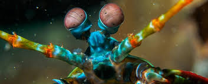
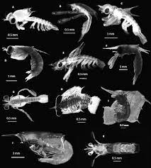

Fatos sobre o Stomatopoda
Descrição

Seu nome científico, que é Odontodactylus scyllarus.Os crustáceos da ordem Stomatopoda, conhecidos vulgarmente como tamarutacas, estão entre os crustáceos predadores mais agressivos e de comportamento mais complexo, sendo animais bentônicos crípticos e raramente encontrados, apesar de sua abundância, devido ao hábito escavador.
| Tipo | Classificação |
|---|---|
| Reino | Animalia |
| Filo | Arthropoda |
| Subfilo | Crustacea |
| Classe | Malacostraca |
| Subclasse | Hoplocarida |
| Ordem | Stomatopoda |
Visão
Esses animais possuem o mais complexo sistema de visão de cores do mundo animal, pois enxergam 12 cores primárias, correspondentes aos 12 pigmentos distintos presentes em sua retina.
Nossos olhos possuem três tipos desses receptores - que correspondem à luz azul, verde e vermelha -, que nos permitem perceber o espectro de cores que vemos. Os cães contam com apenas dois tipos de cones (verde e azul), e é por isso que eles vêm tons de azul, verde e um pouco de amarelo. Muitos anfíbios, répteis, aves e insetos possuem quatro tipo de cones, o que significa que espécies dessas classes conseguem ver cores que o nosso cérebro é incapaz de processar. Algumas espécies específicas de borboletas e possivelmente pombos possuem cinco cones de percepção de cor, o que aumenta ainda mais a quantidade de pigmentos que eles são capazes de perceber. O sistema de visão dos estomatópodes possui doze cones sensíveis à luz e outros quatro que filtram a luz (16 cones no total), o que lhes permite ver cores polarizadas e imagens multiespectrais.
Como cada cone pode ver cerca de 100 cores, os estomatópodes são capazes de ver 1024 cores, ou seja, 1 septilhão de cores. Em comparação, o olho humano vê 106 cores, ou seja, 1 milhão de cores apenas. A visão dos estomatópodes é sensível à luz ultravioleta, mas ainda é desconhecido se ela pode distinguir a luz infravermelha.
Famílias
- Indosquillidae
- Erythrosquillidae
- Alainosquillidae
- Eurysquillidae
- Gonodactylidae
- Hemisquillidae
- Odontodactylidae
- Protosquillidae
- Pseudosquillidae
- Takuidae
- Coronididae
- Heterosquillidae
- Lysiosquillidae
- Nannosquillidae
- Tetrasquillidae
- Harpiosquillidae
- Squillidae
- Parasquillidae
- Sculdidae
Referências
- Joel W. Martin & George E. Davis (2001). An Updated Classification of the Recent Crustacea (PDF). [S.l.]: Natural History Museum of Los Angeles County. p. 132
- Infopédia, Dicionário de Língua Portuguesa da Porto Editora. «Estomatópode». Consultado em 2 de janeiro de 2014
- (em inglês) [S. N. Patek, W. L. Korff, and R. L. Caldwell, Volume 428, páginas=819–820 Deadly strike mechanism of a mantis shrimp]
- (em inglês) Editorial de USA Today acessado em 23 de abril de 2013
- «BBC Science & Nature Mantis Shrimp». Consultado em 26 de abril de 2013. Arquivado do original em 27 de maio de 2012
- Justin Marshall & Johannes Oberwinkler (1999). «Ultraviolet vision: the colourful world of the mantis shrimp». Nature. 401 (6756): 873–874. Bibcode:1999Natur.401..873M. PMID 10553902. doi:10.1038/44751
- David Cowles, Jaclyn R. Van Dolson, Lisa R. Hainey & Dallas M. Dick (2006). «The use of different eye regions in the mantis shrimp Hemisquilla californiensis Stephenson, 1967 (Crustacea: Stomatopoda) for detecting objects». Journal of Experimental Marine Biology and Ecology. 330 (2): 528–534. doi:10.1016/j.jembe.2005.09.016